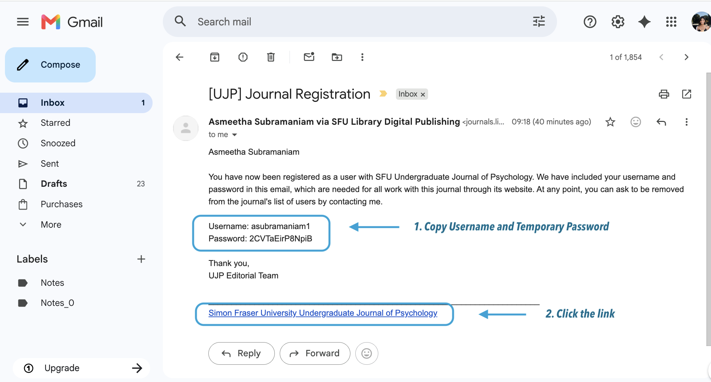
Open the email containing your OJS login information and temporary password.
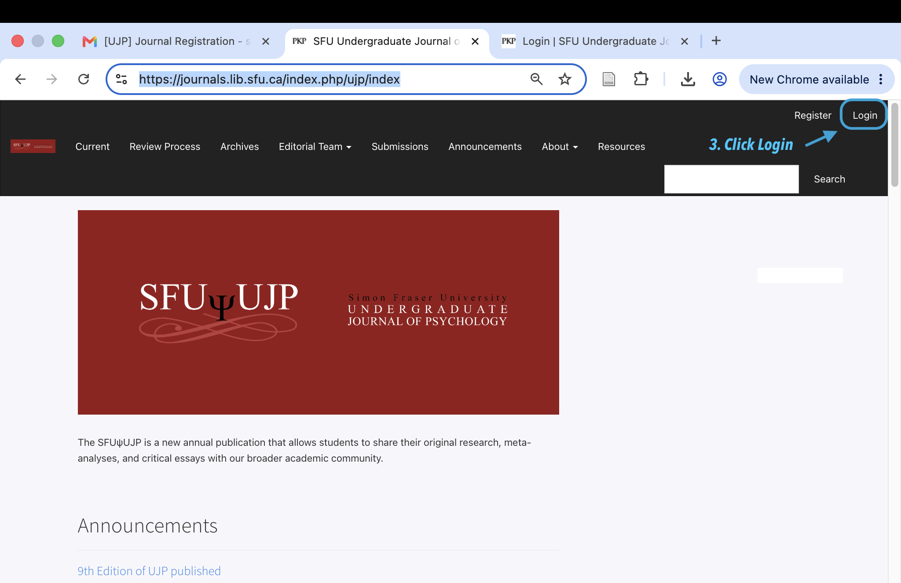
Click the OJS login hyperlink provided in the email.
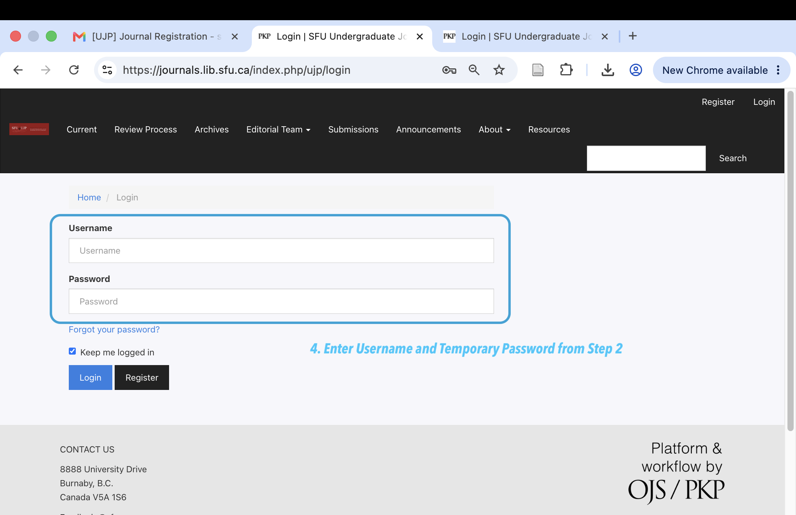
Enter your username and temporary password.
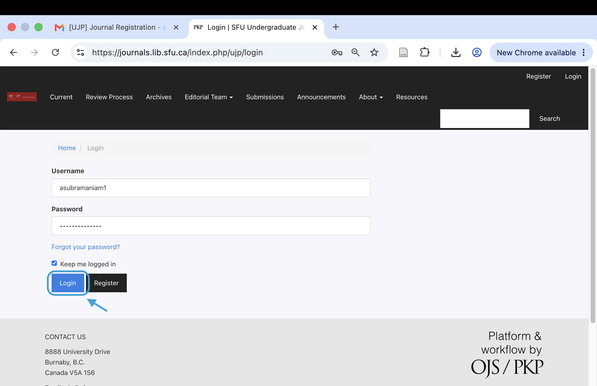
Enter your current password and create a new password.
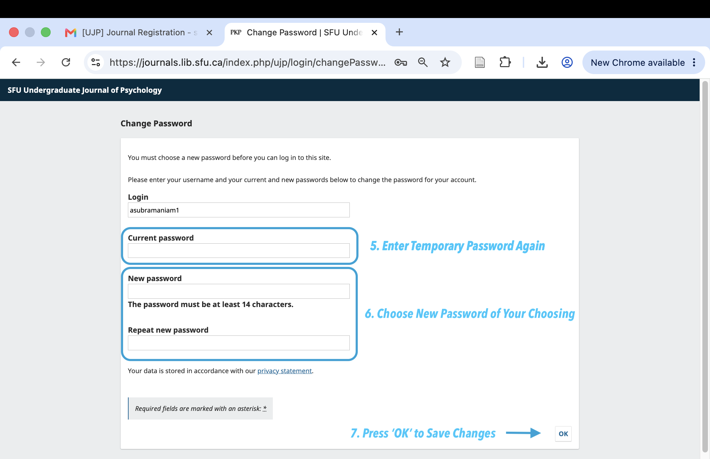
Select OK to complete the setup process.
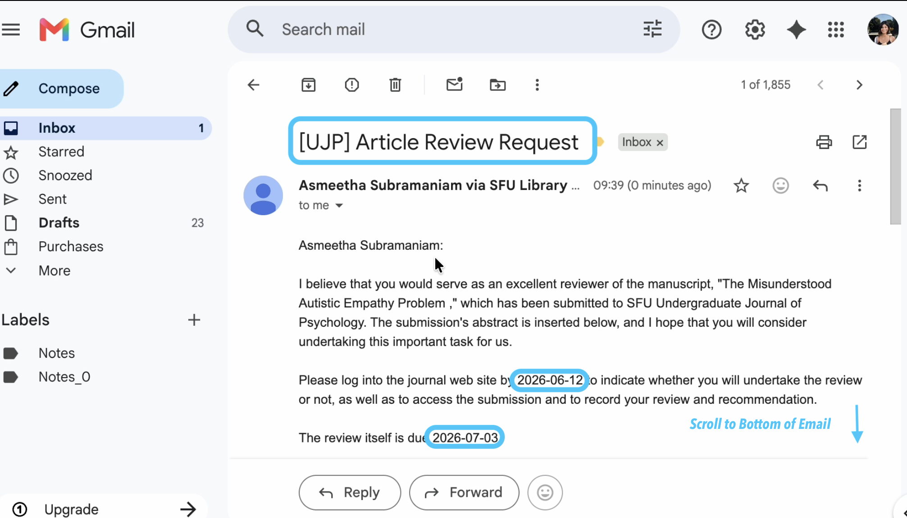
Open the email from the journal editor asking you to review a manuscript. Note the response due date and review due date.
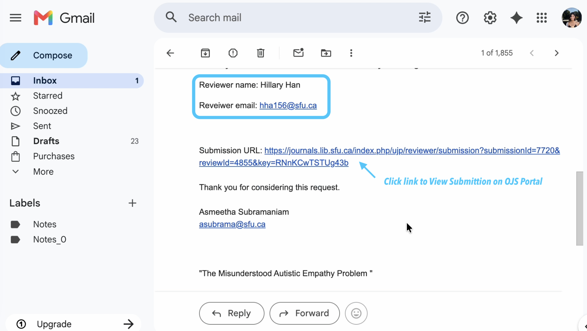
Scroll to the bottom of the email and click the submission link (or copy/paste the URL) to open the OJS review page.
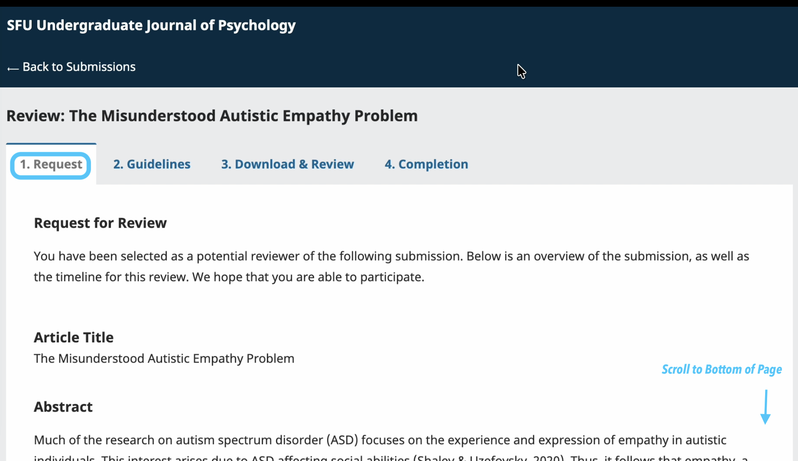
Read the article title, abstract, and review schedule. Ensure there is no conflict of interest.
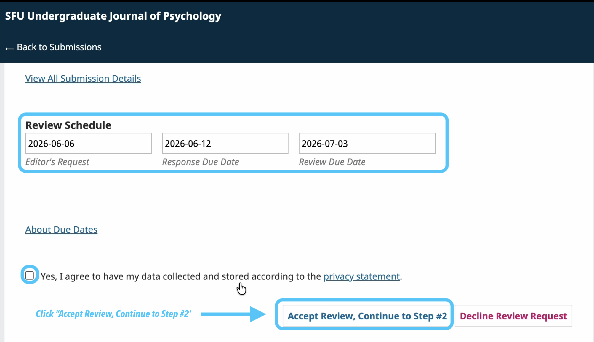
Click the Accept Review, Continue to Step #2 button to indicate you will complete the review.
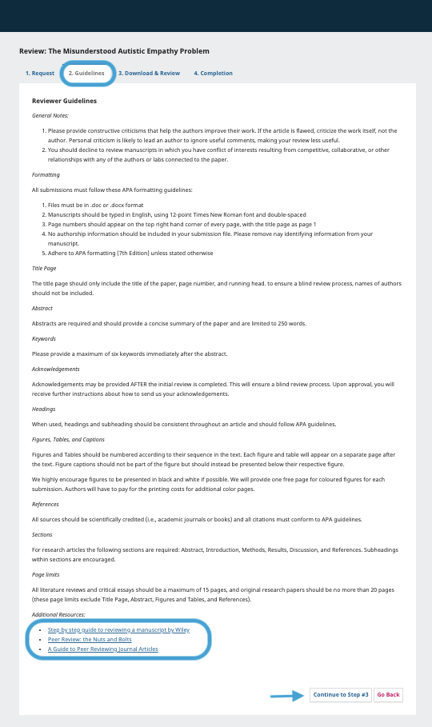
Read the formatting requirements, conflict of interest policy, and other instructions carefully before proceeding.
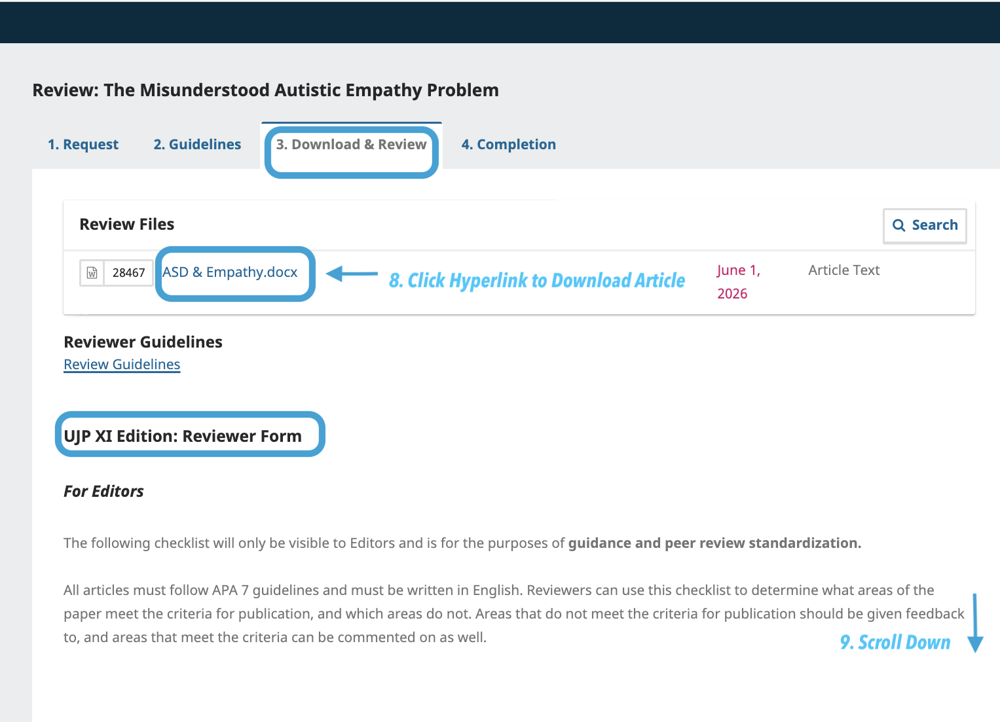
Navigate to the Download & Review section. Click the hyperlink (e.g., ASD & Empathy.docx) to download the manuscript file.
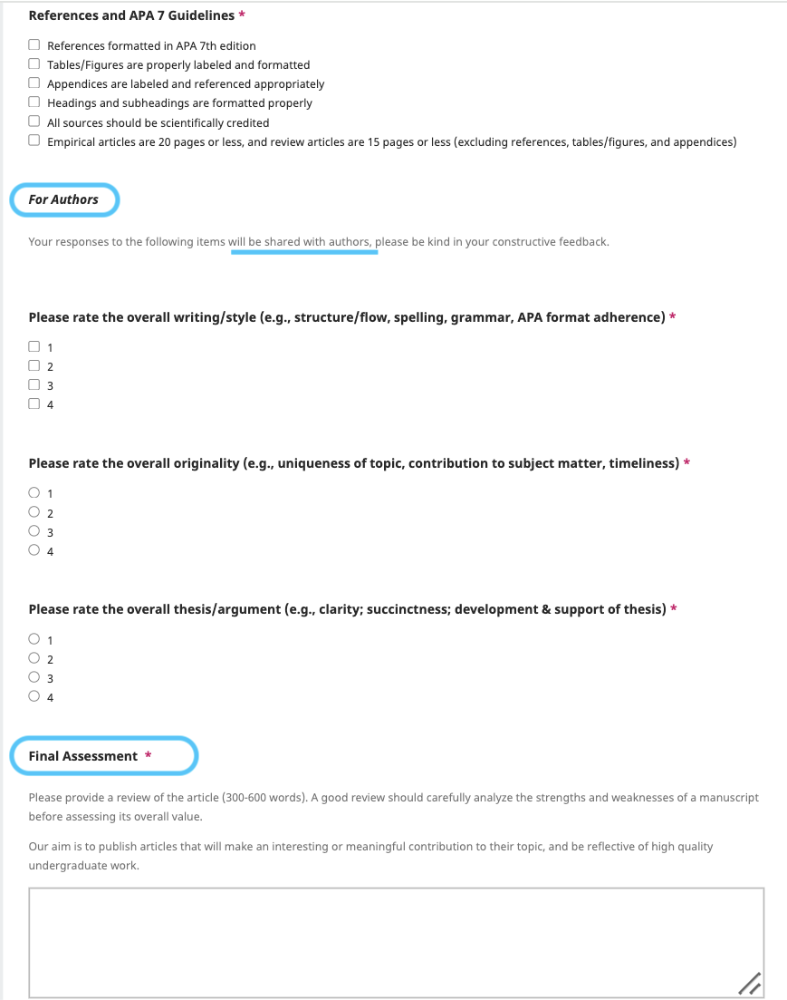
Collaborating with your co-reviewer, rate the manuscript on writing style, originality, and quality of thesis argument. Work together to construct a detailed final assessment (300‑600 words) with constructive feedback for the author. Only one detailed assessment is required per pair of reviewers but both reviewers must participate.
Undergraduate Reviewer: Please write "Detailed Assessment Submitted as Reviewer Pair" and paste your detailed final assessment in the text box.
Graduate Reviewer: Please include any addtional comments you may wish to provide. Otherwise, please write "Detailed Assessment Submitted as Reviewer Pair- Please see second Review."
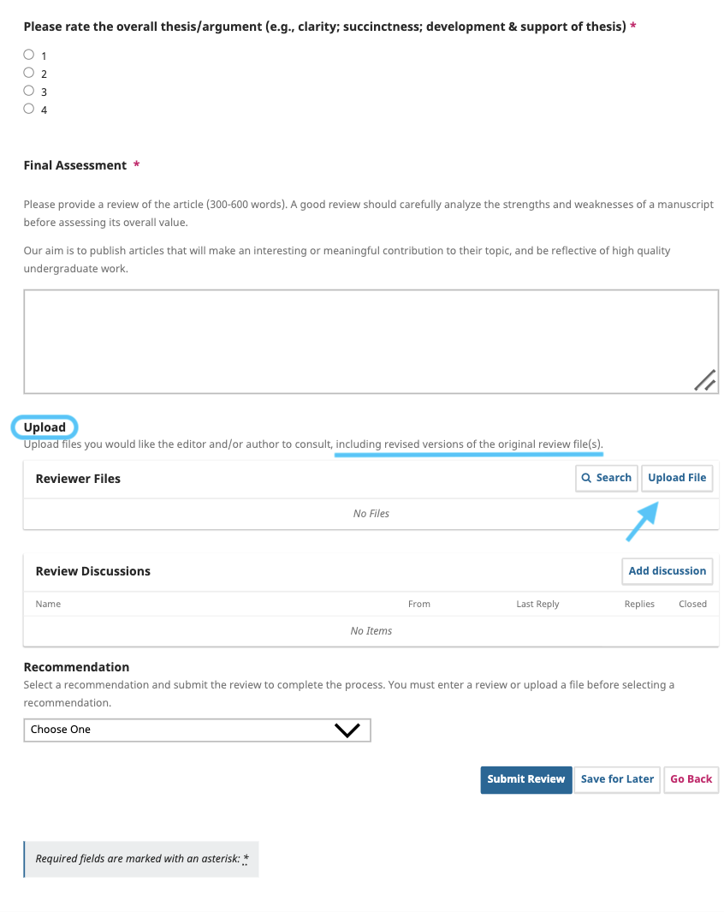
If you have annotated files or additional documents, upload them in the Reviewer Files area. Then scroll to the Recommendation section.
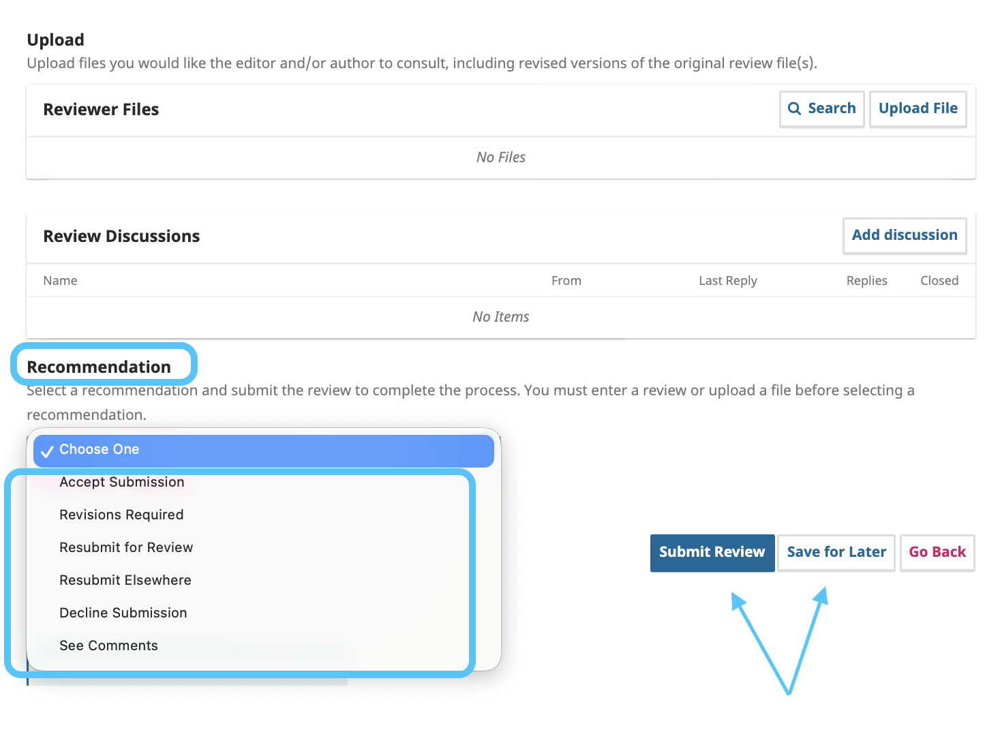
Select a recommendation (e.g., Accept Submission, Revisions Required, etc.) and click Submit Review.